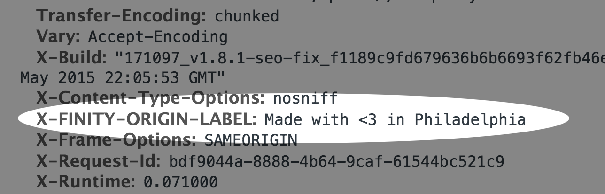
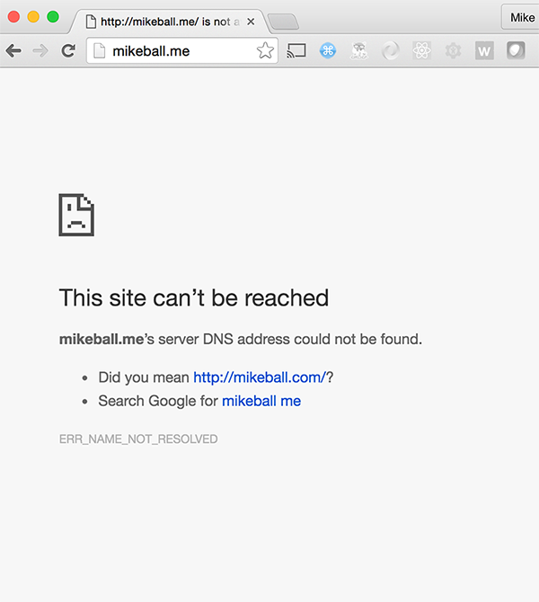
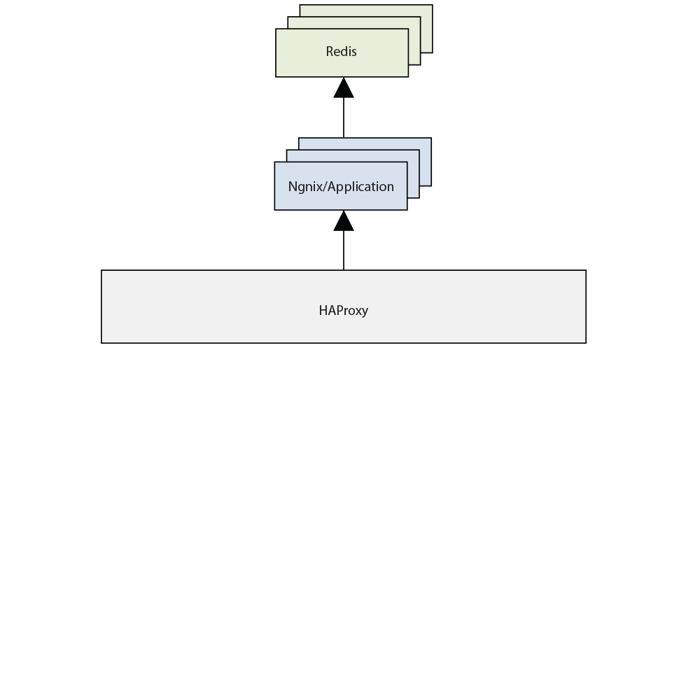
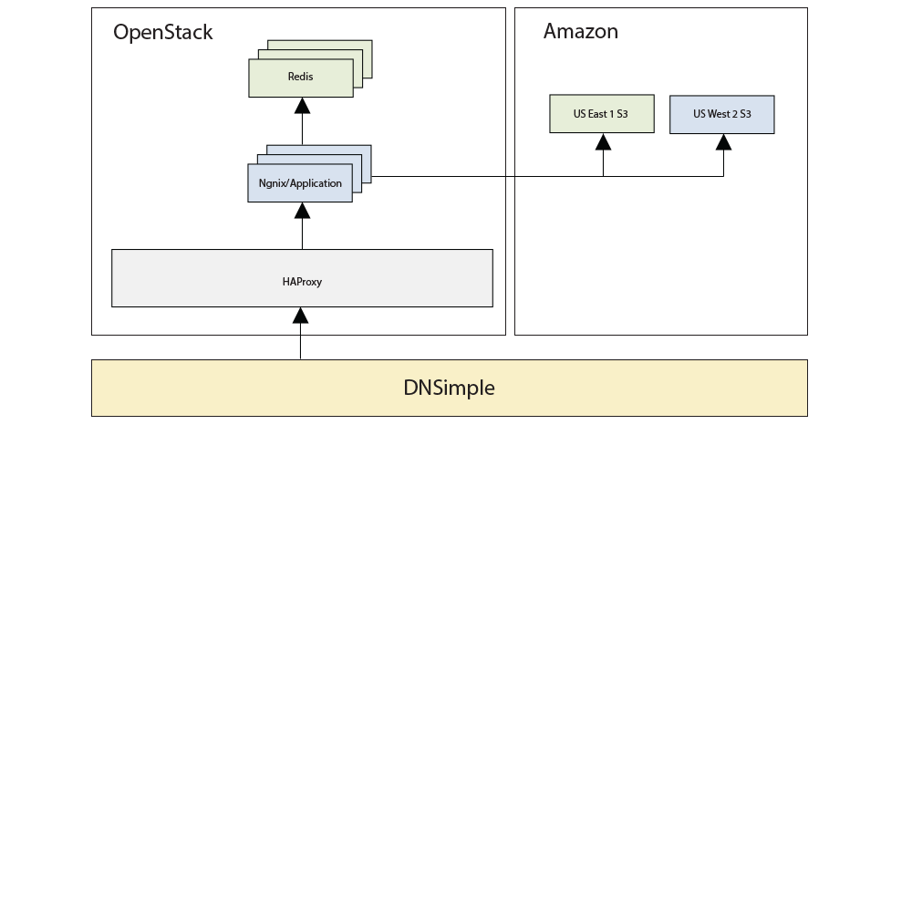

Slides are here:



A helpful tool towards this goal.
Terraform provides a common configuration to launch infrastructure — from physical and virtual servers to email and DNS providers.
Says terraform.io
(oh, and HashiCorp built it)
What does this definition mean?
.tf config file allows teams to describe their infrastructure in simple DSLterraform CLI creates, changes, and destroys these resources accordinglyDeclare .tf file resources via HCL (HashiCorp Configuration Lanaguage):
resource "digitalocean_droplet" "web" {
name = "tf-web"
size = "512mb"
image = "centos-5-8-x32"
region = "sfo1"
}
resource "dnsimple_record" "hello" {
domain = "example.com"
name = "test"
value = "${digitalocean_droplet.web.ipv4_address}"
type = "A"
}terraform plan to view the execution planterraform apply to execute the planterraform destroy to destroy infrastructure(there are more; these are the basics)
Terraform saves record of infrastructure state in JSON.
terraform.tfstateterraform.tfstate.backupplan + apply resolve what is requested with what exists, using .tf, provider APIs, and tfstate.
terraform + software engineering practices (git, code review, CI) = 😎
github.com/mdb/terraform-example
mikeball.me from 1) nothing into 2) a functional website
Let's tour the .travis.yml
deploy.shterraform/main.tfDemo time!
Slight HTML edit to source a CSS file
(maybe not the most infrastructure-intensive change but hopefully you see my point)
Codified infrastructure managed like software source code via code reviews!
mdb/terraform-example is a simple example but...
API client libraries vs. syntax for describing cloud resources
if server.nil?
compute.servers.create(flavor_id: 1, image_id: 3, name: 'my_server')
else
# do something else
endresource "aws_instance" "my_server" {
ami = "ami-408c7f28"
instance_type = "t1.micro"
}Individual machine management vs. higher level datacenter/service abstraction
Good at...


Provider-specific vs. multi-provider agnostic
Good at...


github.com/hashicorp/terraform/tree/master/builtin/providers
How to coordinate across teams? And avoid merge conflicts?
And keep sensitive data secret?
Enter remote state

If it's an internet-accessible API that can be modeled declaratively, it can be terraform'd.
says Paul Hinze, Terraform core contributor
What is a provider?
A provider in Terraform is responsible for the lifecycle of a resource: create, read, update, delete
says terraform.io
(i.e. AWS, Heroku, your-internal-service)
Big benefits!
terraform-provider-${foo}tf changes are cheaptfstate